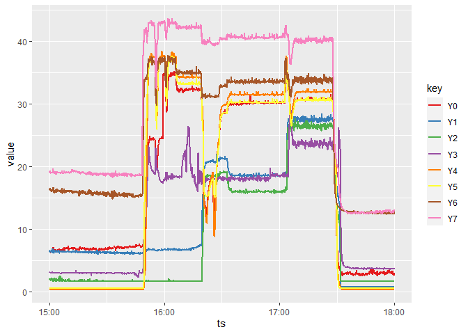

The goal of ‘Rthingsboard’ is to provide interaction with the API of ‘ThingsBoard’ (https://thingsboard.io/), an open-source IoT platform for device management, data collection, processing and visualization.
Installation
You can install the released version of ‘Rthingsboard’ from CRAN with:
install.packages("Rthingsboard")And the development version from GitHub with:
# install.packages("devtools")
devtools::install_github("DDorch/Rthingsboard")Example
This is a basic example which shows you how to extract data from the following public dashboard : http://scada.g-eau.fr/dashboard/4db16100-f3e9-11e8-9dbf-cbc1e37c11e3?publicId=299cedc0-f3e9-11e8-9dbf-cbc1e37c11e3
Define the configuration parameters
# Identifier of SupAgro Halle hydraulique SCADA
url = "http://scada.g-eau.fr"
publicId = "299cedc0-f3e9-11e8-9dbf-cbc1e37c11e3"
entityId = "18d56d50-f3e9-11e8-9dbf-cbc1e37c11e3"
startDate = as.POSIXct("2020-11-19 15:00:00", tz = "Europe/Paris")
endDate = as.POSIXct("2020-11-19 18:00:00", tz = "Europe/Paris")
# Set logger threshold to DEBUG to see extra messages for debug purpose
logger::log_threshold(logger::DEBUG)Connexion to the ‘ThingsBoard’ server
First, you need to create an object of class ThingsboardApi as follow:
# Connection to the API
tb_api = ThingsboardApi(url = url, publicId = publicId)
#> DEBUG [2021-01-20 12:38:44] ThingsboardApi$getToken: eyJhbGciOiJI...
#> DEBUG [2021-01-20 12:38:44] ThingsboardApi$getToken: expiration 2021-01-20 12:43:44Retrieve data from the ‘ThingsBoard’ server
You can get the available keys on the specified device defined by its entityId:
# Get list of keys
keys = tb_api$getKeys(entityId = entityId)
#> DEBUG [2021-01-20 12:38:44] keys = A0, A1, A10, A2, A3, A4, A5, A6, A7, A8, A9, B0, B1, C1, C3, N0, Q0, Q1, Q2, Q3, Y0, Y1, Y10, Y2, Y3, Y4, Y5, Y6, Y7, Y8, Y9Knowing the name of the available keys, you can get the telemetry of this device for a given period defined by startTS and endTS.
Here below, we download the telemetry for all keys beginning by “Y”:
df <- tb_api$getTelemetry(entityId,
keys = keys[grep("^Y", keys)],
startTs = startDate,
endTs = endDate)
#> DEBUG [2021-01-20 12:38:44] getValues query keys=Y0,Y1,Y10,Y2,Y3,Y4,Y5,Y6,Y7,Y8,Y9&startTs=1605794400000&endTs=1605805200000&agg=NONE
#> DEBUG [2021-01-20 12:38:44] getValues query keys=Y0,Y1,Y10,Y2,Y3,Y4,Y5,Y6,Y7,Y8,Y9&startTs=1605794400000&endTs=1605804700000&agg=NONE
#> DEBUG [2021-01-20 12:38:44] getValues query keys=Y0,Y1,Y10,Y2,Y3,Y4,Y5,Y6,Y7,Y8,Y9&startTs=1605794400000&endTs=1605804199000&agg=NONE
#> DEBUG [2021-01-20 12:38:44] getValues query keys=Y0,Y1,Y10,Y2,Y3,Y4,Y5,Y6,Y7,Y8,Y9&startTs=1605794400000&endTs=1605803699000&agg=NONE
#> DEBUG [2021-01-20 12:38:44] getValues query keys=Y0,Y1,Y10,Y2,Y3,Y4,Y5,Y6,Y7,Y8,Y9&startTs=1605794400000&endTs=1605803198000&agg=NONE
#> DEBUG [2021-01-20 12:38:44] getValues query keys=Y0,Y1,Y10,Y2,Y3,Y4,Y5,Y6,Y7,Y8,Y9&startTs=1605794400000&endTs=1605802698000&agg=NONE
#> DEBUG [2021-01-20 12:38:44] getValues query keys=Y0,Y1,Y10,Y2,Y3,Y4,Y5,Y6,Y7,Y8,Y9&startTs=1605794400000&endTs=1605802197000&agg=NONE
#> DEBUG [2021-01-20 12:38:44] getValues query keys=Y0,Y1,Y10,Y2,Y3,Y4,Y5,Y6,Y7,Y8,Y9&startTs=1605794400000&endTs=1605801697000&agg=NONE
#> DEBUG [2021-01-20 12:38:44] getValues query keys=Y0,Y1,Y10,Y2,Y3,Y4,Y5,Y6,Y7,Y8,Y9&startTs=1605794400000&endTs=1605801196000&agg=NONE
#> DEBUG [2021-01-20 12:38:44] getValues query keys=Y0,Y1,Y10,Y2,Y3,Y4,Y5,Y6,Y7,Y8,Y9&startTs=1605794400000&endTs=1605800696000&agg=NONE
#> DEBUG [2021-01-20 12:38:44] getValues query keys=Y0,Y1,Y10,Y2,Y3,Y4,Y5,Y6,Y7,Y8,Y9&startTs=1605794400000&endTs=1605800195000&agg=NONE
#> DEBUG [2021-01-20 12:38:45] getValues query keys=Y0,Y1,Y10,Y2,Y3,Y4,Y5,Y6,Y7,Y8,Y9&startTs=1605794400000&endTs=1605799695000&agg=NONE
#> DEBUG [2021-01-20 12:38:45] getValues query keys=Y0,Y1,Y10,Y2,Y3,Y4,Y5,Y6,Y7,Y8,Y9&startTs=1605794400000&endTs=1605799194000&agg=NONE
#> DEBUG [2021-01-20 12:38:45] getValues query keys=Y0,Y1,Y10,Y2,Y3,Y4,Y5,Y6,Y7,Y8,Y9&startTs=1605794400000&endTs=1605798694000&agg=NONE
#> DEBUG [2021-01-20 12:38:45] getValues query keys=Y0,Y1,Y10,Y2,Y3,Y4,Y5,Y6,Y7,Y8,Y9&startTs=1605794400000&endTs=1605798193000&agg=NONE
#> DEBUG [2021-01-20 12:38:45] getValues query keys=Y0,Y1,Y10,Y2,Y3,Y4,Y5,Y6,Y7,Y8,Y9&startTs=1605794400000&endTs=1605797693000&agg=NONE
#> DEBUG [2021-01-20 12:38:45] getValues query keys=Y0,Y1,Y10,Y2,Y3,Y4,Y5,Y6,Y7,Y8,Y9&startTs=1605794400000&endTs=1605797192000&agg=NONE
#> DEBUG [2021-01-20 12:38:45] getValues query keys=Y0,Y1,Y10,Y2,Y3,Y4,Y5,Y6,Y7,Y8,Y9&startTs=1605794400000&endTs=1605796692000&agg=NONE
#> DEBUG [2021-01-20 12:38:45] getValues query keys=Y0,Y1,Y10,Y2,Y3,Y4,Y5,Y6,Y7,Y8,Y9&startTs=1605794400000&endTs=1605796191000&agg=NONE
#> DEBUG [2021-01-20 12:38:45] getValues query keys=Y0,Y1,Y10,Y2,Y3,Y4,Y5,Y6,Y7,Y8,Y9&startTs=1605794400000&endTs=1605795691000&agg=NONE
#> DEBUG [2021-01-20 12:38:45] getValues query keys=Y0,Y1,Y10,Y2,Y3,Y4,Y5,Y6,Y7,Y8,Y9&startTs=1605794400000&endTs=1605795190000&agg=NONE
#> DEBUG [2021-01-20 12:38:45] getValues query keys=Y0,Y1,Y10,Y2,Y3,Y4,Y5,Y6,Y7,Y8,Y9&startTs=1605794400000&endTs=1605794690000&agg=NONE
#> DEBUG [2021-01-20 12:38:45] getValues query keys=Y0,Y1,Y10,Y2,Y3,Y4,Y5,Y6,Y7,Y8,Y9&startTs=1605794400000&endTs=1605794400000&agg=NONEHere below the first records of the extracted telemetry:
| key | ts | value |
|---|---|---|
| Y0 | 2020-11-19 17:59:55 | 2.9683 |
| Y0 | 2020-11-19 17:59:50 | 2.7493 |
| Y0 | 2020-11-19 17:59:45 | 2.6398 |
| Y0 | 2020-11-19 17:59:40 | 2.7493 |
| Y0 | 2020-11-19 17:59:35 | 2.7493 |
| Y0 | 2020-11-19 17:59:30 | 2.7493 |
You can then record this table into a file in the current directory:
# getwd() # to get the path of the current directory
write.csv2(df, "myData.csv")And also plot some time series:
library(ggplot2)
ggplot(df, aes(x = ts, y = value)) +
geom_line(aes(color = key), size = 1) +
scale_color_brewer(palette = "Set1")